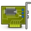

ubuntuusers.de
Portal
Forum
Wiki
Ikhaya
Planet
Mitmachen
Wiki
Startseite
Hinweis:
Dies ist ein statischer Snapshot unseres Wikis vom Jan. 17, 2018 und kann daher nicht bearbeitet werden. Der aktuelle Artikel ist unter
wiki.ubuntuusers.de
zu finden.
Wiki
Index
Letzte Änderungen
Liste neuer Artikel
Übersicht
FAQ
Benutzung
Kategorie
Wortwolke
Mitmachen
Wikiartikel anlegen
Howto anlegen
Wiki-Referenz
Wiki-Syntax
Baustellen
Artikelideen
Ungetestete Artikel
Ausbaufähige Artikel
Fehlerhafte Artikel
Rund ums Wiki
Konfiguration
Backlinks anzeigen
Exportieren
Metadaten
Rohformat
HTML
Startseite
Willkommen im Wiki von ubuntuusers.de!
Hier findest du eine ständig wachsende Sammlung von Anleitungen und Problemlösungen.
Neu hier?
Infos für Ein- und Umsteiger
Downloads
Ubuntu herunterladen
Installation
Ubuntu installieren
Erste Schritte
Konfigurationen nach der Installation
Software
Finden, Installation und Konfiguration
Sicherheit
Strategien, Verschlüsselung, Privatsphäre
System
Funktionsweise, Bestandteile, Konfiguration

Hardware
Einrichtung und Kompatibilität
Netzwerk
Internet und Netzwerk einrichten
Ubuntu Touch
– Smartphones und Tablets
Index
– Alle 7624 Artikel von A bis Z
Jeder, der
registriert
ist, kann hier Seiten bearbeiten oder einen
Diese Revision
wurde am 28. Mai 2016 07:06 von
noisefloor
erstellt.
Wiki
Startseite
 2004 – 2017 ubuntuusers.de • Einige Rechte vorbehalten
2004 – 2017 ubuntuusers.de • Einige Rechte vorbehalten